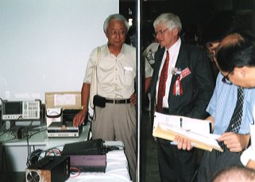
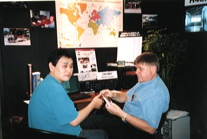
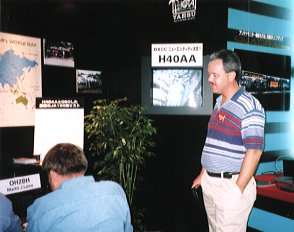

Kenwood Cup Yacht 1996 (Hawaii)
【Back Issues Aug.98】
24.Aug - 3.Sep.98 JA1RJU/JD1 & 7J1YAM(Chichijima Ogasawara Is.)運用
23.Aug.98
(07:00) ◎ [お知らせ]
8月24日から約1週間の予定で、JD1(小笠原・父島)での7J1YAM(Ogasawara EME Club)運用のため、 このコーナーは休ませて頂きます。 この間の1エリアの入感状況は、臨時に「JI1UHZのHomepage」で 提供致します。 尚、父島では6m/HFの運用も予定しています。 ◎ 今回のJD1からの144MHzの運用は、ハムフェアのDXCCのQSLチェックで来日したK5FUV(Bill)が、休暇を 使ってJD1に渡る話から始まった。 それならと、彼の友人のW5UN、KB8RQ、WA9KRT、VE7BQHや欧州のSM5FRH、 I2FAK...等からの144MHzでのEMEのリクエストが寄せられた。 144MHzのEMEのために、準備を進めている段階で、最初に突き当たったのはわが国での免許制度の問題だっ た。 特に日本でのV.UHFでの大電力の免許は、簡単ではないことは予想された。 欧米の局には"考えら れない"厳しい日本の規制に、免許申請者のK5FUV・ケナマー氏も一度はあきらめかけたものの、最後の粘 り強い交渉の末、出発4日前の20日になって、144MHzの200W局・7J1YAMの免許取得にこぎつけた。 限定免許ながら最大の"難問"は何とか解決できた。 後は、現地での条件をクリアー出来れば、この時点で 晴れて「144MHzのEME局」が誕生することとなった。 今回は個人の休暇に合わせた日程と設備の問題から、正直なところEMEでのQSOの可能性はかなり少ないと思 われる。 特にEME QSOの最適時間の"月の位置"は最悪に近く、ローパワーとゲインの少ないアンテナでの運用では チャンスは少ない。 今回は期間も短く、免許の問題もからむ中でのスケジュール調整で、十分な準備は出 来なかったが、今回の経験は、今後の本格的な運用に向けての"予備運用"として大いに意義あるものとなる はず。 今回は144MHz帯でのEME運用だが、"この次は50MHz帯でのEMEの運用も..."と、言いたい所だが、わが国で は電波法で定められた「アマチュア局が動作することを許される周波数帯(施行規則第13条の2)」で、50MHz 帯での「宇宙無線通信業務」(EME、サテライト等とのQSO)は"禁止"されている。 残念ながら「電波法」が 改正されない限り、現段階では50MHzでEMEを目的とした運用は出来ない。 [参考] アマチュア局が動作することを許される周波数帯(施行規則第13条の2)

22.Aug.98
(10:00) ◎ ハムフェアに"呼応"した訳ではないと思うが、日中のコンデションは"休憩状態"。 今日は西日本の一部でも「部分日食」が観測されたが、テレビのニュース画面に写し出される太陽面に複 数の大きな「黒点」群がはっきり確認出来るのに気ずかれた方も多いはず。 6mのコンデションの上昇に関係のある「黒点数」に一喜一憂する6mマンは、昔から「太陽族」と称され ていたが...言われるまでもなく納得してしまう。 ◎ 4月1日のDXCCのルール改正によってニューエンティティー候補の一つとなっていたH40(Temotu Is)が、 正式にNewとして認められた。 先のH40AA、H40ABの運用では、残念ながら6mのQSOは出来なかったが、今後 もQRVが期待出来る所なので楽しみ。 尚、ハムフェアのYAESUのブースの一角に、今年もOH2BHのコーナー が設けられ、彼らが運用したH40AAのQSLを直に手渡すサービス？を行っている。 運が良ければ、QSO時に 録音された、パイルアップの中に浮かび上がる"あなたの声"を聞くことが出来る。 コーナーはOH2BHのシャックをイメージしていて、シャックを訪れた"友人"には握手とキーホルダーのサー ビス付き。 初日(21日)には、1995年のBS7Hや今回のH40AAにも参加したN4GN(Tim)も見学に訪れていた。 尚、H40AAがDXCCに正式にクレジットされるのは10月以降の予定。


21.Aug.98
(14:00) ◎ 今日から有明・東京ビッグサイトで「'98アマチュア無線フェスティバル(ハムフェア)」が始まった。 このコーナーもこの期間はハムフェアの話題が中心となり、DXの入感リポートもひと休みとなりますので ご了承願います。 ハムフェアの初日は、金曜日にしては入場者もそこそこで、特にJAIAのメーカーブースに比べ、クラブ のブースは賑わっていた。 恒例のDXCCの申請場所は朝から長蛇の列で、ARRLから派遣された担当者の秋 山氏が整理に追われててんてこ舞い。 100エンティティー以上の申請は容赦なく後回しにされた。 今後、新規にDXCCを申請される局は「JARLの代行申請」を利用するようにアナウンスしていた。 ◎ K5FUV=16オンス、OH2BH、N4GN=12オンス、JA1BK、JA1RJU=8オンス...これはいったい何？？ 実は夕食に5人が個々にオーダーしたステーキの量！ 1オンスは28.25gなので、何とケナマー氏の16オン スは456g！これを生ビールを飲みながらペロリとたいらげるのだから恐れ入る。 この後、別の店でビールとワインを"はしご"して、またまた六本木へと繰り出して行った!!。 これが"外人パワー"なのか？ ◎ 8月24日から29日の日程でJD1(父島)から、144MHzのEMEの運用を計画している「小笠原EMEクラブ」の 検査がハムフェアの会場で行われた。 短い滞在期間ながら144MHzで200Wの運用が行われる。 コールサインは7J1YAM(免許責任者はK5FUV=7J2ADX)。 他に同クラブのメンバーのJA1BK、JA1RJU、JK7TKE (JJ1QXG)の3人が参加することになっている。 144MHz帯の運用時間、周波数などの情報はEMEのネットで 流される。 尚、HF(RTTYを含む)と6mも平行して運用されるが、コールサインはそれぞれ個人のものが使われる。20.Aug.98
(08:00) HL50LTC 03:04 50.110 CW ◎ 午前中は弱いHLとJA4が入感していたが、日中はめぼしいDXの入感は確認出来なかった。 明日(21日)からいよいよ'98アマチュア無線フェスティバル(ハムフェア)が有明・東京ビッグサイトで開 幕する。 今年は何エンティティーのDXとEyeball出来るか楽しみ。 6mの関連では、ホンコンのVR2XMT が早々と来日を決めていたが、はたして会場で会えるか...。19.Aug.98
(09:00) ◎ 夕方近くなってJA8のEsが強力に入感してきたが、日中は49.750MHzのTVもあまり上昇してこない静か なコンデションだった。 KH7(ハワイ)と5W1SA(アメリカン・サモア)とのQSOがリポートされていたが、JAからもA35がオープンする コンデションとなってきているので、JAからのQSO出来るのも近い？。 ただ、5W1のオープン時にKH6/7や V73、VKから良くリポートされている55.250MHzの信号が、JAにはまだ聞こえないので、伝搬条件はかなり 異なっているものと思われる。 周波数も50MHz帯から5MHzも離れていてはオープニングの"パイロット"と してはあまり有効ではないかも知れないが...。18.Aug.98
(08:00) HL50LTC 02:53 50.110 SSB ◎ 午前中から強力に入感していた49.750MHzのTVも、最近は午後になると急激に弱まってきた。 コンデシ ョンはEs伝搬の近場のDXから、F2による入感に徐々に切り替わってきている。 昨夜のVK4JH、P29KFSなど TEPによる入感としては最盛期に近い信号強度で強力だった。 北米→ヨーロッパのパスでは、一足早くF2 による伝搬で賑わっている。 マルチホップEsの入感でJAからもお馴染みとなった、北米中部のN5JHVは、 今度はG(イギリス)などのヨーロッパ勢とF2でQSOしている。17.Aug.98
(13:00) (VK4-TV 08:00 46.172) VK6AO/P 08:25 50.110 SSB VK4JH 08:53 50.110/115 SSB P29KFS 13:00 50.110 SSB ◎ 昨日のEs伝搬の"喧騒"がウソのように静かな日中のコンデションだった。 久しぶりに強力な46.172MHz のVK4-TVの上昇と共に、VK6/VK4が入感してきた。 真冬のオーストラリアの6mはいま一つアクティビティが 良くないのか、聞こえていたVK4はタウンズビルのVK4JHだけ？。16.Aug.98
(10:00) HL2IPC 03:03 50.180 SSB HL5/JA6HW 09:21 50.110/115 SSB Split 5KHz UP HL1LTC 09:25 50.130 SSB 6K50ZW 09:43 50.213 SSB ◎ 午前中はHL/JA6、5、4エリアと共に、"超"近場の強力なEsが発生、珍しくJA3エリアがバンド"一面"に 59+で聞こえていた。 この様に近場のEsが強い時には"超"DXの入感は望めない。 HL5/JA6HW・角居(Sumii)さんは固定局として免許され、出張先のホテルの7階から、窓枠を利用したループ アンテナ(磁界型アンテナ)でQRVしている。 QSLはJARL経由でJA1RST宛。15.Aug.98
(10:00) HL5OXF 01:07 50.125 SSB/CW VR2SIX/B 02:10 50.075 CW Beacon VR2IL 02:35 50.110 SSB VK4DO 08:35 50.110 SSB VK6AO/M 08:45 50.110 SSB Mobile QTH.Broome VK4FNQ 09:11 50.180 SSB ◎ 午前中の西方向のコンデションはJA6/JR6/HLから、VR2(ホンコン)まで伸びた。 夕方(07:30z頃)から45.250MHzのZL-TV、46.172MHzのVK4-TVが弱いながら聞こえていた。 08:45zに入感した VK6AO/Mは、IC-706に1/4の車載GPでの運用だったが、RS59で強力だった。 久々に"複数"のVK'sの入感があ ったものの、オープンしている時間はまだ長続きしない。14.Aug.98
(10:00) 6K50ZW 03:33 50.190 SSB BV/JH3GCN 06:17 50.110 CW/SSB BV2PU 08:25 50.110/220 SSB BV2PU 09:15 50.100 CW BV3FQ 09:19 50.120 SSB ◎ 午後から久しぶりにBV/JH3GCNが入感していたが、コンデションは西日本に開いていたらしく、1エリアで は信号も弱く、この時間帯の応答率は悪かった。 09:00z頃から信号は上昇。13.Aug.98
(10:00) V73AT 09:37 50.110 CW ◎ いつも強力な西方向からのバズは珍しく静か。 DXの入感は、09:37zの"CQ"にリポートを送ってきたV73AT だけ。 昨日のリポートの後に、V73ATはトンガのA35YHとも11:17zにQSOしている。 最近は国内のEsコンデショ ンが一段落する08:00z以降に南太平洋方面が上昇してくる。 46.172MHzのVK4-TVもこの時間に入感している。 ◎ 南米とヨーロッパ間のオープンはわれわれが想像する以上にFBなもようで、PY5CCは8/10だけでヨーロッパ を101局、19エンティティーとQSOしている。 このQSOで驚かされるのは、ヨーロッパ側のオープンの範囲が広 いこと。 南はCT(ポルトガル)から北のUS5(ウクライナ)まで、約1時間半弱の短時間で、約3,500Kmの広い範囲 とQSOしている。 QSOの相手が"適当な場所"に集中しているとはいえ、JAでは考えられないPY5CCの"荒稼ぎ"。12.Aug.98
(10:00) HL50ACW 01:50 50.214 SSB 6K50ZW 04:28 50.190 SSB DS1GQS 04:56 50.160 SSB A35NQ 08:23 50.110 CW/SSB OP.JL2ONQ QTH.Nukualofa(GL=AG28) ◎ 昨日同様、日中は西方向の強力なバズの中から、HL/DS/6K等の韓国勢とJA6がEsで入感。 昨日、北日本(JA7、8)で入感したトンガのA35NQが21.290MHzでQRVしていた。 30分おきに6mの様子を見なが らの運用とのことだったが、07:00zの時点ではまだ6mはオープンしていない。 30分後に再びトライした直後の 07:40z頃からA35NQが50.110MHzで入感、1、2、8エリアなど東日本を中心にQSO。 1エリアでは、08:30zには聞こえなくなったが、この後にV73ATがA35NQとQSOしている。 コンデションは昨日 同様、北日本で強かったもようで、8エリアではSSBでRS59のリポートを送っていた。 尚、昨日の初オープンではJA7/8、ハワイのKH7Rなど12局とQSOしたとのこと。 A35NQのQSLはJL2ONQ本人へ。11.Aug.98
(12:00) HL50XF 02:18 50.130 SSB VR2SIX 05:21 50.075 CW Beacon (A35NQ 08:05 50.110 SSB) JA7/8 ◎ 日中は相変わらずの西方向のTVのバズと、HL/JA6がFBに入感。 午後から弱い信号ながらVR2も入感した。 ここのところSF/SSNも一時的ながら150付近まで上昇して、昨日のV73ATの入感や、本日のA35NQのリポート にあるように、F2がらみの伝搬もみられる様になってきた。 PY/LUなどの南米とヨーロッパ、アフリカとヨーロッパなど、赤道越えの伝搬も頻繁にリポートされる様に なってきた。 午後からの南太平洋方面が入感してくると、JAの秋のDXシーズンもいよいよ開幕だ。10.Aug.98
(13:00) HL50XF 00:31 50.130 SSB/CW V73AT 09:11 50.105/110 CW ◎ 午前中はHL/JA6/JR6のEsが強力。 お盆休みを兼ねての"帰郷移動"なのか、ポータブル/6の局が多い。 50.160MHzでJN3***/6が、"AMモードサービス"と称して出ていたが、この"サイドバンド"の広がりがDXが出 ている50.130MHz以下までかぶっていた。 呼んだ局のAM変調が聞こえなかったらしく、このJN3氏は「マイ クゲインを一杯上げてどなってくださーい」と、どなっていたが、たぶんこの局は普段からそのようにして 運用していたものと思われる。 "DXバンド"でこれをやられたのではたまらない。 AMモードもいいが、運 用には細心の注意が必要だ。 ◎ V73ATやJU60MTZなどのDX局が、CQを連発している事があるが、意外に呼ぶ局は少ない。 それでも誰かが 呼んでQSOした後は、結構パイルになったりするのは何故なのか？。 勘ぐるに、これは"スケルチ"を掛けて、 弱い局が受信出来ない状態でワッチしている局が案外多いのかも知れない。 これでは6mの"DX"は逃げてし まう。09.Aug.98
(10:00) JD1BIA 04:15 50.120 SSB JD1BIY 05:15 50.115 SSB ◎ 午前中は相変わらずの西方向からの強力なバズと、弱いJA6のEs。08.Aug.98
(09:00) ◎ 午前中は西方向からのバズとJA4-6のEsが強力。 珍しく早い時間から46.172MHzのVK4-TVが入感してき たが、コンデションはまだ長続きしない。07.Aug.98
(10:00) JU60MTZ 09:28 50.110 CW ◎ 昨日はVK方面のコンデションが特に良かったのか、VK4の入感の後で1エリアでもVK8が入感、QSO出来て いる。 暦の上では明日が"立秋"だが、 東日本では梅雨から、夏を飛び越えて早々と"秋"を迎えることと なった。 いっそのことDXの"秋"のコンデションも早まってもらいたいもの？。 今日は、09:25z頃から49.750MHzの強力なバズの中からJU60MTZのCWがFBに入感。06.Aug.98
(10:00) VR2SIX 01:44 50.075 CW Beacon SP1LJP/MM 02:25 50.110/106 CW Op.Marek QTH=PL72JQ→PL72KV VK4DO 09:36 50.110 CW (VK8AH 10:49 50.110 SSB) ◎ 午前中に弱いVR2SIXのビーコンが入感していたが、他のVR2は確認されていない。 02:25zから50.110MHzのCWでSP1LJP/MM(op.Marek)のCQが入感。 QTHはGL=PL72JQとのことだったので、位置 的には、JA1から199度方向、沖の鳥島(Okino torishima)の北方を航行中の船舶からの運用と思われる。 03:45z頃にはGLがPL72KVに変わっていたので、1時間半のオープン中に約25Km、北々東方向に移動(北上)し ていた。 "SP"のプリフィックスはポーランドの局だが、"/MM"とはいえポーランドのコールサインを6mで 聞くのは珍しい。 もちろんDXCCのエンティティー的にはカウントされないが、ヨーロッパの局が太平洋 上を航行しながら"6mを聞いている"ことに感心？する。 ◎ Es勢力の弱くなる09:30z頃からイブニングタイプのTEPによるVK4が良く入感する様になった。 今日も 09:25z頃から46.172MHzのVK-TVが、激しいフラッターを伴いながら上昇してきた。 最初はアンテナのビームが150度方向だが、間もなくフロントが分からなくなるほどに強力になる。しかし、 今のところこの時間に熱心に聞いてくれている局はVK4DO・Wallyぐらいか？。 このVK4のパスはJA1など東 日本が中心と思われるが、この後に入感してくるVK8の方は西日本を中心に良く聞こえる。05.Aug.98
(10:00) JU60MTZ 01:34 50.110 SSB RW0CD 02:54 50.109 CW HL50ACW 05:08 50.210 SSB HL4RCE 05:12 50.230 SSB HL50LTC 05:43 50.120 SSB HL50LTC 05:50 51.102 FM ◎ 強力なバズの中からJU60MTZが入感。 コンデションはJA8から6まで広範囲にオープン。 02:50z頃か らJU60MTZと入れ替わるようにRW0CDのハイスピードのCWが入感していたが、テスト送信？だけでQSOをし ないまま終了した。 HL'sは相変わらず強力。04.Aug.98
(10:00) VK4DO 08:27 50.110/125 SSB ◎ 午前中は相変わらず49.750MHzのバズが強力。 DXは散発的なHL'sの入感のみ。 夕方になってVK4DOが 突然強力に入感してきたが、今日もコンデションは長続きせず、数分で聞こえなくなった。 ◎ 最近、HL/DSの局がプリフィックスに"50"を使用しているが、これは韓国が第二次世界大戦後に、日 本の35年に渡る支配から解放され、1948年8月15日に韓国政府としてスタートしてから、今年が50周年目 となるのを記念(建国記念日)しての特別コール。 この"記念コール"は8月1日から8月31日までの一ヶ月 間使われる。03.Aug.98
(10:00) HL50LTC 00:43 50.110/150 SSB HL50FPL 13:30 50.113 SSB ◎ 午前中から夕方遅くまで49.750MHzのTVのバズが強力。 午後に北方向(JA8)のEsが入感。 1エリアで のDXはHLのみ？。 ◎ KG6JDX・Joeが青森県・三沢市にQSY、7J7ACXのコールで6mにQRVを始めた。 さっそくJD1(父島)とも QSOしている。02.Aug.98
(10:00) JU60MTZ 00:43 50.110 SSB QSL via JT1CJ HL1LTC 03:45 50.110 SSB DS1BJU 04:15 50.150 SSB HL50LTC 04:20 50.125 SSB/AM QSL to HL1LTC HL1SOL 04:49 50.102 SSB DS1INT 05:36 50.160 SSB ◎ 昨日の様な国内のEs伝搬はみられなかったが、西方向からの49.750MHzのバズと共にHL/DS'sが強力。 午前、午後の北米(W)狙いの時間帯も、近場のパスが強力では望みは無い。01.Aug.98
(10:00) VR2YRC 23:39 50.120 SSB VR2SIX 23:41 50.075 CW Beacon HL50XF 23:45 50.128 CW HL3EPH 23:48 50.135 SSB DS2ECV 00:02 50.130 SSB (BG7OH 00:19 50.120 SSB) T88LJ 06:52 50.125 SSB/CW op.JM1LJS JU60MTZ 07:23 50.110 CW ◎ 早朝から国内の強力なEsのスキャッターを伴う伝搬で賑わった。 01:00z過ぎまでVR2、HL/DSがFBに 入感していた。
| Index | Back Issues |
|---|---|
|
最新情報へ戻る |